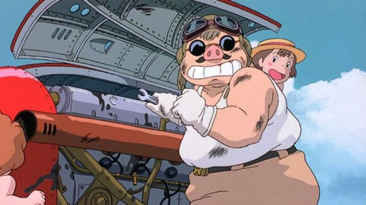

"Porco Rosso" is an odd film for Hayao Miyazaki and for Studio Ghilbi. The studio was working hard, producing new films at a rate of one per year. Some of these films were intended to be smaller, either for television or, in the case of "Porco Rosso," an in-flight film for an airline. But as production continued, it grew enough to be a full-length film in its own right. This does mean the film is a bit shorter than expected, and some story elements not as tight as they ought to be, but it's an absolutely fun story regardless. And Miyazaki fans will squeel to see little details that recall his other works, from the past ("Castle in the Sky") and the future ("Howl's Moving Castle") either in character design or story themes. The story is about an ace pilot who happens to be a pig. Literally and figuratively. He has a snout and pig ears. Exactly how this came to be is kept intentionally vauge. As the movie progresses, we learn that Porco was a human pilot in a war, has regrets for surviving when his fellow pilots didn't, and his difference in values resulted in him abandoning his country and duty. After this, he simply woke up as a pig, and had to live with his new appearance as a commentary on himself. Otherwise, he lives a fairly carefree life, protecting local boats full of roudy school children from inept sky pirates, spending his nights at the local tavern run by an old flame, and living on a quiet island alone. At one point, Porco is shot down by a hot-shot pompous pilot from out of town, and presumed dead. Still alive, he quietly tows his plane to a trusted mechanic in town to reclaim his honor, while having to admit some humility in having the daughter of his aging mechanic fix the plane instead.The story is an engaging one, even if it doesn't fully realize itself properly. Fio, the mechanic's daughter, seems an odd relic of movies from decades earlier. She is proudly independent and eager to prove that girls can do anything as well as boys, and Porco initially balks at the idea. Later, Fio insists on tagging along with him, becoming a potential love interest, despite being young enough to be Porco's daughter, and despite Porco already having a hopeful relationship option through Gina, the bar owner. If you can overlook this bit of backwards writing, the story is a ton of fun from start to finish. All of the characters are memorable and likable, skewing towards humor and comedic relief when possible, and even when guns fire, there never seems to be a sense of danger or threat to anyone. That makes things all the more exciting to watch! When the climax comes to Porco and his rival fighting in the water fist to fist with Fio as the prize, I couldn't help but laugh at the situation. I mentioned that it doesn't fully realize itself: whether or not Porco ever becomes human again, or if he ever returns to rekindle his love for Gina, is left intentionally open and vague, even at the expense of the viewer. There are layers of depth to the story, but not to the satisfying degree they ought to be. But its rare to see a movie this lighthearted and enjoyable, so it can be overlooked pretty quickly. The animation of "Porco Rosso" isn't too shabby, even thought production started as lesser than a full feature film. Special care is taken to the planes, and comedic and exagerrated character movements feel very much like Miyazaki. The Italian-inspired setting it well realized. The voice acting in English does well to match the setting. "Porco Rosso" isn't a great movie, but it is a really fun and effective one in its simplicity, and even against the best Studio Ghibli has to offer, I have a fondness for it, warts and all.
- "Ani" More reviews can be found at : https://2danicritic.github.io/ Previous review: review_Ponyo Next review: review_Princess_Jellyfish